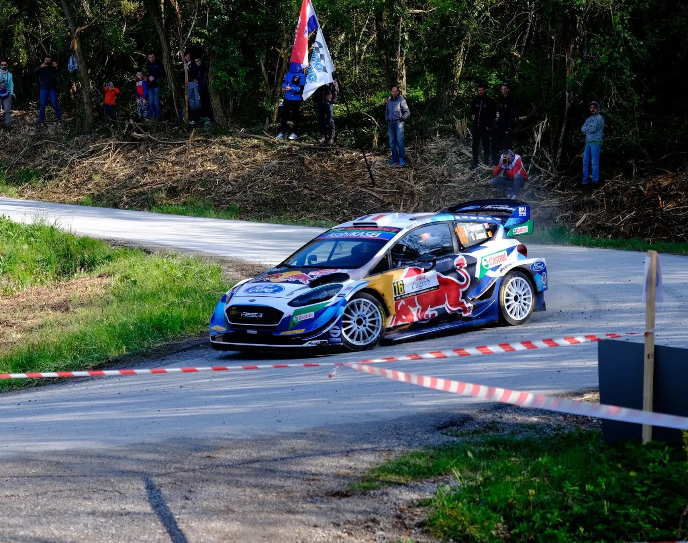
Could this be how Rally Croatia will look like in the future? - Adriatic Rally Concept
After the end of this year's Rally Croatia, rumors started to emerge that the event organisers are exploring the idea of moving the event to someplace else in the future. The rumored locations include Dubrovnik, a location that has never hosted a rally and is known as a tourist spot, and Rijeka, the host city of Rally Croatia from 2011 to 2012. The second option sounds a lot more feasible, with the service park being close to the Grobnik circuit near Platak. That rumor, along with the one about Rally Sardegna being dropped from the calendar for 2025, made me interested in exploring the idea of another 3 nation rally, this time between Croatia, Italy and Slovenia, with the event being based in the costal city of Trieste!
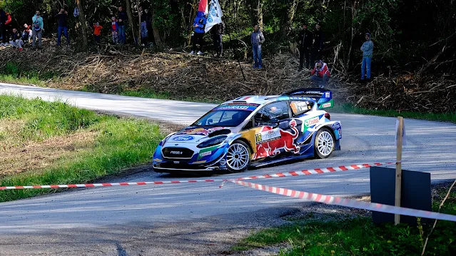
This concept event, combines stages in the 3 nations mentioned beforehand, effectively merging parts of Rally Croatia from when it was in Rijeka, Rally Alpi Orientali, an event that used to be in the ERC back in the early 2000s, and Rally Nova Gorica in Slovenia, near Trieste. Unlike the Central European Rally, this Adriatic Rally would be kinder to the drivers in terms of liaison distance, as Rijeka is only 77km away from Trieste, and Udine, where the Alpi Orientali stages are in, are also 77km away from Trieste.
Now, enough talk, let's get in to the itinerary.
Thursday
Shakedown - Trieste - 3.27 km
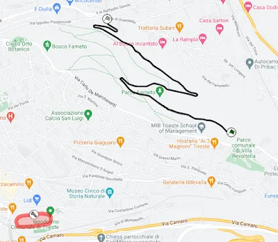
Map of the Shakedown stage
The Shakedown stage is in close proximity to the Service Park, and it's a good representation of the rally's stages. The road inside of the Parco al Ferdinandeo is narrow, but smooth and flowing, with 4 hairpins here and there. It's a proper rally road, and it's quite lucky to have it so close to the city and the Service Park.
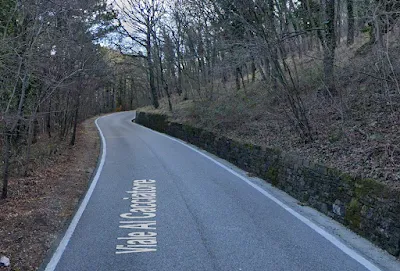
Part of the stage from Google Street View
After the Shakedown, the crews will move to Croatia for the ceremonial start in Rijeka and the first stage of the rally.
SSS1 - Preluk - 14.63 km
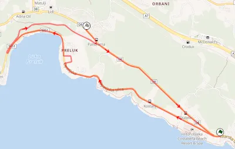
Map of the Preluk stage from Rally Maps
Similarly to the Klatovy SSS in CER, this stage has quite the history behind it. The opening stage of the rally is actually the Opatija Circuit, host of the Yugoslav Grand Prix in MotoGP 7 times among others. Preluk was used in both 2011 and 2012 as an SSS, and it's the sort of SSS fans love. The stage is generally wide and flowing, going along the coast, then up and down a hill. After the stage the crews will head back to Rijeka overnight.
Onboard of the stage
End of Thursday
Friday
SS2/5 - Lokve - 12.8km
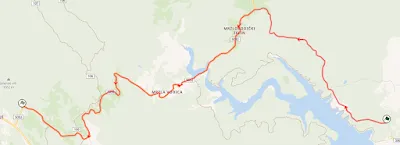
Map of the Lokve stage from Rally Maps
Lokve was used in Rally Croatia in 2011 and 2012 when the event was in Rijeka. It's a stage very similar to the ones used on Day 1 of Rally Croatia this year. The stage starts off onto a rather narrow road and goes through a forested area. The stage then turns left onto a wider road, not dissimilar to the one Platak has on the descent from the mountain. The stage becomes faster on that road, and even passes next to a lake! After the lake, the road goes uphill again, and patches of broken tarmac appear more frequently.
SS3/6 - Platak - 15.8km
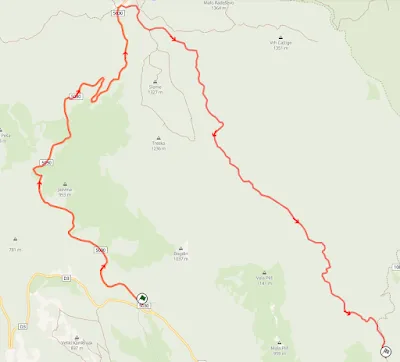
Map of the Platak stage used in 2011 from Rally Maps
This is the only stage from this year's Rally Croatia on the itinerary. Unlike 2022, 2023 and 2024, the stage is actually ran in reverse like in the ERC years. That means the wider, faster road is actually the one the crews will have to use to climb the mountain, and the tricky narrow road the cars used to get up to the ski resort will be downhill.
Onboard of the stage from 2012
SS4 - Grobnik - 6.4km
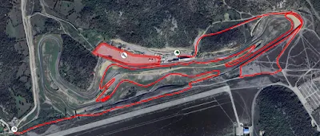
Map of the Grobnik circuit stage, as well as the remote service
After the first two stages of the day, the crews will move to the Grobnik circuit for a short stage similar to the ones used in Rally Monza. After the stage there will be a remote service, after which the crews will have to tackle Lokve and Platak for a second time. There was actually due to be a rally in the circuit last year, but it was cancelled, so you'll have to make due with my custom layout of the stage.
SS7/9 - Učka - 20.69km
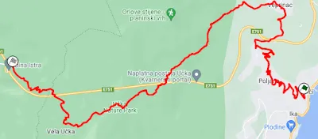
Map of the Učka stage on Mapfab. It's the same as the one used in 2011 and 2012, with a twisty hairpin section added at the start.
Another stage that hasn't been used since Croatia joined the WRC. Last used in 2014, when the event was based in Porec, the version of the stage I have used is identical to the version used in the ERC and ERT, but there's a 6km part that's been added before the start, that's full of hairpins. The stage starts off on a wide road, with lots of hairpins as mentioned before. In fact almost all of the stage is on a wide smooth road. After a faster middle part, the road becomes twisty and sinuous towards the end. The stage reminds me a bit of Rally Monza's mountain stages. It's also the longest stage of the day, and the only repeated stage on the second loop of Friday.
SS8 - Lugoplav - 16.63km
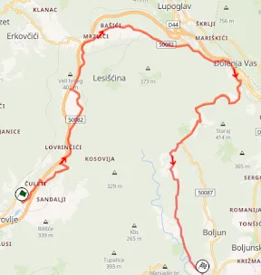
Map of the Lugoplav stage from 2012
Despite being in Istria, this stage is actually quite similar to the stages we are used to from Rally Croatia. Most of the stage is on narrow, broken roads, with a few crests towards the middle of the stage. The start of the stage has been repaved compared to when it was last used, and the road is actually quite smooth, running parallel to the highway. The end of the stage is quite fast and narrow, and it reminds me a bit of Barum Rally Zlin! After the stage the crews will go to a regroup, and afterwards will do the second pass of Učka.
Onboard of the stage from 2012
SS10 - Brest - 7.95km
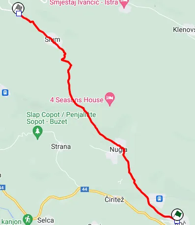
Map of the stage
The last stage of the day, and the shortest of the rally. This piece of road hasn't been used in a rally before. The stage goes uphill from the village of Roc all the way near the border with Slovenia. At the start there's a medium wide patched road that turns into a narrower broken one. The end of the stage is a fast blast through the forest. After the stage the crews head back to Trieste.
End of Friday
Saturday
SS11/14 - Trivio - 20.8km
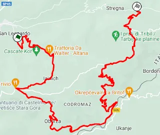
Map of the Trivio stage, a stage that is used on the Alpi Orientali Rally.
We head to Italy for Saturday. The first stage of the day is a very interesting one. Trivio is a stage that reminds me a bit of Sanremo, mixed a bit with Japan! Almost all of the stage is in the forest, in slippery and narrow tarmac roads. There's many hairpins, especially towards the end of the stage, where the road is exceptionally dirty and sinuous.
You can see the first 5km and the last 5km of the stage on this onboard.
SS12/15 - Mersino - 17km
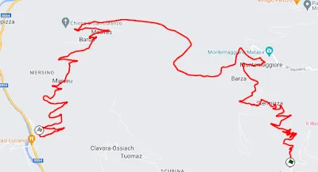
Map of the Mersino stage
My favourite stage from Saturday! The stage starts off on a sinuous, narrow and broken road with a lot hairpins and slow corners. After the village of Montemaggiore, the stage becomes faster and more flowing, while leaving the forest. After that, the stage becomes technical again, with a section that reminds me of Rally Croatia meeting Rally Mont Blanc! The road surface is very similar to the Croatia stages, but the characteristics of the road remind me of something you'd see in France, with the stage also passing through some villages!
Onboard of the stage used in Alpi Orientali Historic in 2021
SS13/16 - Canalutto - 21km
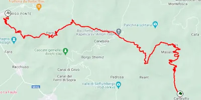
Map of the stage. It's essentially the Le Malghe di Porzûs stage from 2002 merged with the Masarolis stage from 2010.
Canalutto is the longest stage of the day at 21km. The stage starts uphill, with a technical sinuous section that again reminds me like something you'd see from a regional French rally. After that section the stage goes downhill, into a semi-fast section that reminds me of some of the narrower Sanremo stages. After passing a chapel, the road becomes smoother and faster, before becoming narrower and more technical at the end of the stage. After SS13, the crews will go to Cividale del Friuli for a remote service, after which they will do the second pass of the last 3 stages.
SS17 - Bronik - 12.1km
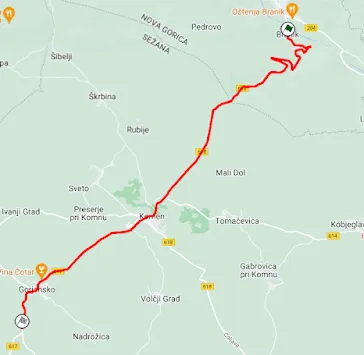
Map of the Bronik stage
Our first stage in Slovenia! This stage hasn't been used in a rally before, and it's quite different to the ones used on Saturday. Bronik is quite wide and smoothed compared to the Alpi Orientali stages. The stage itself starts near a castle, with a small technical section. After that the stage is fast until the end. There would probably need to be chicanes in the middle bit. After that stage the crews will go to Trieste for the night.
End of Saturday
Sunday
SS18/20 - Morsko - 20.3km
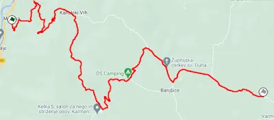
Map of the Morsko stage. Essentially a combination of SS11 and SS3 of last year's Rally Nova Gorica.
Sunday only has stages in Slovenia, based on the Nova Gorica Rally. Morsko is a stage that reminds me of the Austrian Muhtal stage from the Central European Rally, especially the second half. The beginning of the stage is again quite narrow and tricky, with slow corners and hairpins. After that though, the stage opens up and becomes wider and smoother, with fast passes through the hills. The stage leaves that fast road and becomes more narrow and technical towards the end.
Onboard of the first half of the stage.
Onboard of the second half of the stage.
SS19/21 - Renče - 17.1km
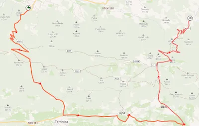
Map of the Renče stage, identical to the one used in the Nova Gorica Rally.
Renče is a stage that's quite smooth and fast. The stage starts and ends with hairpin sections, but in the middle, the stage is fast and flowing. Renče reminds me a bit of CER stages again, but admittedly the more interesting ones. The second part of the stage reminds me of a lot of the stages we had in Croatia this year, with the road going through the forest, with many opportunities for cuts, and with ditches on one side.
Onboard of the Power Stage.
You can see the Full Itinerary, as well as the full map on the table below


Comments